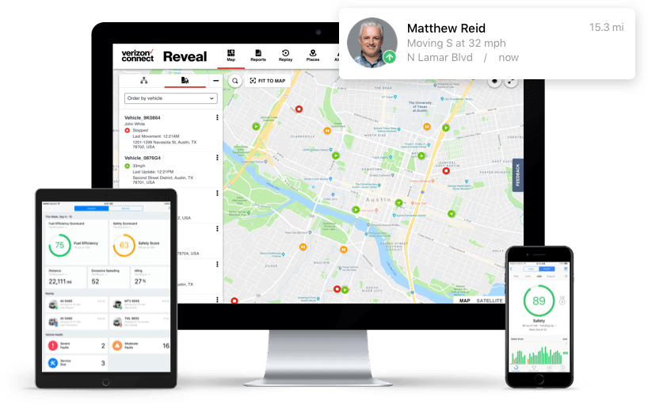

Verizon Connect aims to guide a connected world by automating, optimizing and revolutionizing the way people, vehicles, and things move through the world. The solutions that Verizon Connect offers revolve around better fleet management which includes compliance to government rules and regulations, reduced fuel use, increased productivity, and safer driving.
During my virtual internship, I was able to work on both enterprise products like Reveal and consumer products like Hum.
Reveal allows fleet managers to streamline and automate compliance to follow regulations made by the Federal Motor Carrier Safety Administration (FMCSA) (ex. ELD Mandate, Updated Hours of Service Rules). This includes solutions such as Logbook and the Electronic Logging Device (ELD) which tracks a driver’s hours of service (HOS) ensuring that drivers adhere to the legal limits. During my time at Verizon, I also worked on their new electronic driver vehicle inspection report that allows commercial drivers to complete their mandatory pre and post trip inspections digitally.
Hum is Verizon Connect’s consumer product that is designed to help users have a smarter, safer, and more connected driving experience. Hum connects to a user's car in order to diagnose vehicle problems, provide access to roadside assistance and emergency help, and monitor a vehicle's health and location.
My bandwidth during this internship was divided between two areas of research. The first being product and user insights. I was responsible for conducting user research for the integration and addition of new features to Reveal as well as gathering feedback from our users about their user journey. The second part of my research related to the Experience Team’s internal research repository and how research is shared amongst researchers, designers, engineers, and product managers.
Compliance Related User Research:
Research Coordination and Repository Design
Internally:
Product
Thank you to Verizon Connect for making this the best possible internship experience! Specifically I would like to thank my manager Cheryl Abenoza, my mentor and buddy Michael Snell, and the entire Atlanta Experience Team.